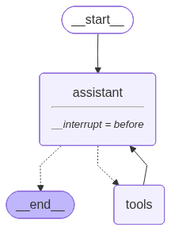
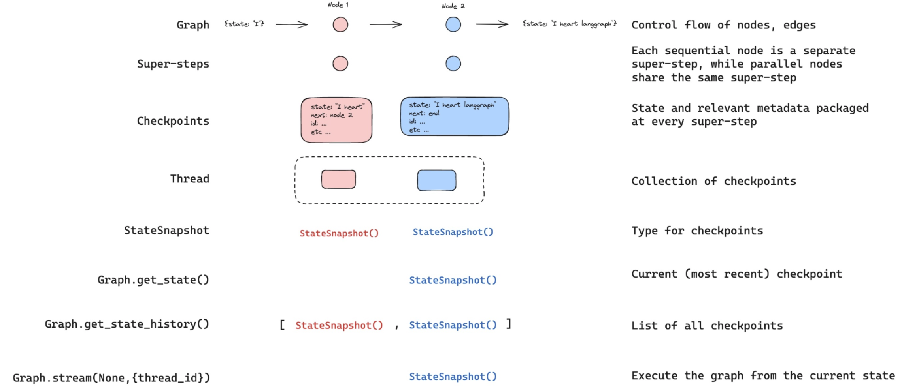
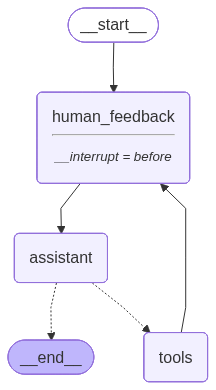

Human In the Loop#
Review For human-in-the-loop, we often want to see our graph outputs as its running.
We laid the foundations for this with streaming.
Goals Now, let’s talk about the motivations for human-in-the-loop:
(1) Approval - We can interrupt our agent, surface state to a user, and allow the user to accept an action
(2) Debugging - We can rewind the graph to reproduce or avoid issues
(3) Editing - You can modify the state
LangGraph offers several ways to get or update agent state to support various human-in-the-loop workflows.
from dotenv import load_dotenv
load_dotenv()
import os
from langchain_groq import ChatGroq
#os.environ["OPENAI_API_KEY"]=os.getenv("OPENAI_API_KEY")
os.environ["GROQ_API_KEY"]=os.getenv("GROQ_API_KEY")
llm=ChatGroq(model="llama-3.1-8b-instant")
#llm = ChatOpenAI(model="gpt-4o")
result=llm.invoke("Hello")
result
AIMessage(content='Hello. How can I assist you today?', additional_kwargs={}, response_metadata={'token_usage': {'completion_tokens': 10, 'prompt_tokens': 36, 'total_tokens': 46, 'completion_time': 0.011542258, 'prompt_time': 0.00156344, 'queue_time': 0.04905918, 'total_time': 0.013105698}, 'model_name': 'llama-3.1-8b-instant', 'system_fingerprint': 'fp_7b3cfae3af', 'service_tier': 'on_demand', 'finish_reason': 'stop', 'logprobs': None, 'model_provider': 'groq'}, id='lc_run--f711e6e2-9bac-4978-acba-8e769ad73a76-0', usage_metadata={'input_tokens': 36, 'output_tokens': 10, 'total_tokens': 46})
### Custom tools
def multiply(a: int, b: int) -> int:
"""Multiply a and b.
Args:
a: first int
b: second int
"""
return a * b
def add(a: int, b: int) -> int:
"""Adds a and b.
Args:
a: first int
b: second int
"""
return a + b
def divide(a: int, b: int) -> float:
"""Divide a by b.
Args:
a: first int
b: second int
"""
return a / b
tools=[add,multiply,divide]
tools
[<function __main__.add(a: int, b: int) -> int>,
<function __main__.multiply(a: int, b: int) -> int>,
<function __main__.divide(a: int, b: int) -> float>]
## Integrate tools with llm
llm_with_tools=llm.bind_tools(tools)
llm_with_tools
RunnableBinding(bound=ChatGroq(client=<groq.resources.chat.completions.Completions object at 0x000001630F5AD880>, async_client=<groq.resources.chat.completions.AsyncCompletions object at 0x000001630F6E9760>, model_name='llama-3.1-8b-instant', model_kwargs={}, groq_api_key=SecretStr('**********')), kwargs={'tools': [{'type': 'function', 'function': {'name': 'add', 'description': 'Adds a and b.', 'parameters': {'properties': {'a': {'description': 'first int', 'type': 'integer'}, 'b': {'description': 'second int', 'type': 'integer'}}, 'required': ['a', 'b'], 'type': 'object'}}}, {'type': 'function', 'function': {'name': 'multiply', 'description': 'Multiply a and b.', 'parameters': {'properties': {'a': {'description': 'first int', 'type': 'integer'}, 'b': {'description': 'second int', 'type': 'integer'}}, 'required': ['a', 'b'], 'type': 'object'}}}, {'type': 'function', 'function': {'name': 'divide', 'description': 'Divide a by b.', 'parameters': {'properties': {'a': {'description': 'first int', 'type': 'integer'}, 'b': {'description': 'second int', 'type': 'integer'}}, 'required': ['a', 'b'], 'type': 'object'}}}]}, config={}, config_factories=[])
### WWorkflow with Langgraph
from IPython.display import Image, display
from langgraph.checkpoint.memory import MemorySaver
from langgraph.graph import MessagesState
from langgraph.graph import START, StateGraph
from langgraph.prebuilt import tools_condition, ToolNode
from langchain_core.messages import AIMessage,HumanMessage,SystemMessage
## system Message
sys_msg = SystemMessage(content="You are a helpful assistant tasked with performing arithmetic on a set of inputs.")
## node definition
def assistant(state:MessagesState):
return {"messages":[llm_with_tools.invoke([sys_msg] + state["messages"])]}
#Graph
builder=StateGraph(MessagesState)
## Define nodes:
builder.add_node("assistant",assistant)
builder.add_node("tools",ToolNode(tools))
## Define the Edges
builder.add_edge(START,"assistant")
builder.add_conditional_edges(
"assistant",
# If the latest message (result) from assistant is a tool call -> tools_condition routes to tools
# If the latest message (result) from assistant is a not a tool call -> tools_condition routes to END
tools_condition,
)
builder.add_edge("tools","assistant")
memory=MemorySaver()
### human in the loop
graph=builder.compile(interrupt_before=["assistant"],checkpointer=memory)
# Show
display(Image(graph.get_graph().draw_mermaid_png()))

thread={"configurable":{"thread_id":"123"}}
initial_input={"messages":HumanMessage(content="Multiply 2 and 3")}
for event in graph.stream(initial_input,thread,stream_mode="values"):
event['messages'][-1].pretty_print()
================================ Human Message =================================
Multiply 2 and 3
state=graph.get_state(thread)
state.next
('assistant',)
graph.get_state_history(thread)
<generator object Pregel.get_state_history at 0x000001631087D220>
state
StateSnapshot(values={'messages': [HumanMessage(content='Multiply 2 and 3', additional_kwargs={}, response_metadata={}, id='c4adff57-c193-4b3a-8820-c97e893eae13')]}, next=('assistant',), config={'configurable': {'thread_id': '123', 'checkpoint_ns': '', 'checkpoint_id': '1f0b3c12-87b6-6607-8000-0e313f96ba71'}}, metadata={'source': 'loop', 'step': 0, 'parents': {}}, created_at='2025-10-28T05:44:23.772109+00:00', parent_config={'configurable': {'thread_id': '123', 'checkpoint_ns': '', 'checkpoint_id': '1f0b3c12-87ad-6392-bfff-fc05f5e35aa4'}}, tasks=(PregelTask(id='4ffac9db-5f5f-9447-bd53-fe0d0ddd3ce9', name='assistant', path=('__pregel_pull', 'assistant'), error=None, interrupts=(), state=None, result=None),), interrupts=())

## Continue the execution to Assistant
for event in graph.stream(None,thread,stream_mode="values"):
event['messages'][-1].pretty_print()
================================ Human Message =================================
Multiply 2 and 3
================================== Ai Message ==================================
Tool Calls:
multiply (qnbg52xa7)
Call ID: qnbg52xa7
Args:
a: 2
b: 3
================================= Tool Message =================================
Name: multiply
6
state=graph.get_state(thread)
state.next
('assistant',)
## Continue the execution of Assistant and then end
for event in graph.stream(None,thread,stream_mode="values"):
event['messages'][-1].pretty_print()
================================= Tool Message =================================
Name: multiply
6
================================== Ai Message ==================================
Tool Calls:
add (06jzxve2f)
Call ID: 06jzxve2f
Args:
a: 2
b: 3
================================= Tool Message =================================
Name: add
5
Edit Human Feedback#
initial_input={"messages":HumanMessage(content="Multiply 2 and 3")}
thread={"configurable":{"thread_id":"1"}}
for event in graph.stream(initial_input,thread,stream_mode="values"):
event['messages'][-1].pretty_print()
================================ Human Message =================================
Multiply 2 and 3
state=graph.get_state(thread)
state.next
('assistant',)
graph.update_state(thread,{"messages":[HumanMessage(content="No,please multiply 15 and 6")]})
{'configurable': {'thread_id': '1',
'checkpoint_ns': '',
'checkpoint_id': '1f0b3c12-8c93-63cb-8001-de3023a5dc81'}}
new_state=graph.get_state(thread).values
for m in new_state['messages']:
m.pretty_print()
================================ Human Message =================================
Multiply 2 and 3
================================ Human Message =================================
No,please multiply 15 and 6
for event in graph.stream(None, thread, stream_mode="values"):
event['messages'][-1].pretty_print()
================================ Human Message =================================
No,please multiply 15 and 6
================================== Ai Message ==================================
<multiply>{"a": 15, "b": 6}</multiply>
for event in graph.stream(None, thread, stream_mode="values"):
event['messages'][-1].pretty_print()
================================== Ai Message ==================================
<multiply>{"a": 15, "b": 6}</multiply>
Workflow will Wait for the User Input#
# System message
sys_msg = SystemMessage(content="You are a helpful assistant tasked with performing arithmetic on a set of inputs.")
## Human feedback node
def human_feedback(state:MessagesState):
pass
### Assistant node
def assistant(state:MessagesState):
return {"messages": [llm_with_tools.invoke([sys_msg] + state["messages"])]}
## Graph
# Graph
builder = StateGraph(MessagesState)
# Define nodes: these do the work
builder.add_node("assistant", assistant)
builder.add_node("tools", ToolNode(tools))
builder.add_node("human_feedback", human_feedback)
## Define the edges
builder.add_edge(START,"human_feedback")
builder.add_edge("human_feedback","assistant")
builder.add_conditional_edges(
"assistant",
# If the latest message (result) from assistant is a tool call -> tools_condition routes to tools
# If the latest message (result) from assistant is a not a tool call -> tools_condition routes to END
tools_condition,
)
builder.add_edge("tools","human_feedback")
memory=MemorySaver()
graph=builder.compile(interrupt_before=["human_feedback"],checkpointer=memory)
display(Image(graph.get_graph().draw_mermaid_png()))

# Input
initial_input = {"messages": "Multiply 2 and 3"}
# Thread
thread = {"configurable": {"thread_id": "5"}}
# Run the graph until the first interruption
for event in graph.stream(initial_input, thread, stream_mode="values"):
event["messages"][-1].pretty_print()
## get user input
user_input=input("Tell me how you want to update the state:")
graph.update_state(thread,{"messages":user_input},as_node="human_feedback")
# Continue the graph execution
for event in graph.stream(None, thread, stream_mode="values"):
event["messages"][-1].pretty_print()
================================ Human Message =================================
Multiply 2 and 3
---------------------------------------------------------------------------
StdinNotImplementedError Traceback (most recent call last)
Cell In[20], line 13
9 event["messages"][-1].pretty_print()
11 ## get user input
---> 13 user_input=input("Tell me how you want to update the state:")
14 graph.update_state(thread,{"messages":user_input},as_node="human_feedback")
16 # Continue the graph execution
File ~\OneDrive\Documents\AI\AgenticAi\venv\Lib\site-packages\ipykernel\kernelbase.py:1472, in Kernel.raw_input(self, prompt)
1470 if not self._allow_stdin:
1471 msg = "raw_input was called, but this frontend does not support input requests."
-> 1472 raise StdinNotImplementedError(msg)
1473 return self._input_request(
1474 str(prompt),
1475 self._shell_parent_ident.get(),
1476 self.get_parent("shell"),
1477 password=False,
1478 )
StdinNotImplementedError: raw_input was called, but this frontend does not support input requests.
# Continue the graph execution
for event in graph.stream(None, thread, stream_mode="values"):
event["messages"][-1].pretty_print()
================================= Tool Message =================================
Name: multiply
6
================================== Ai Message ==================================
The result of multiplying 2 and 3 is 6.